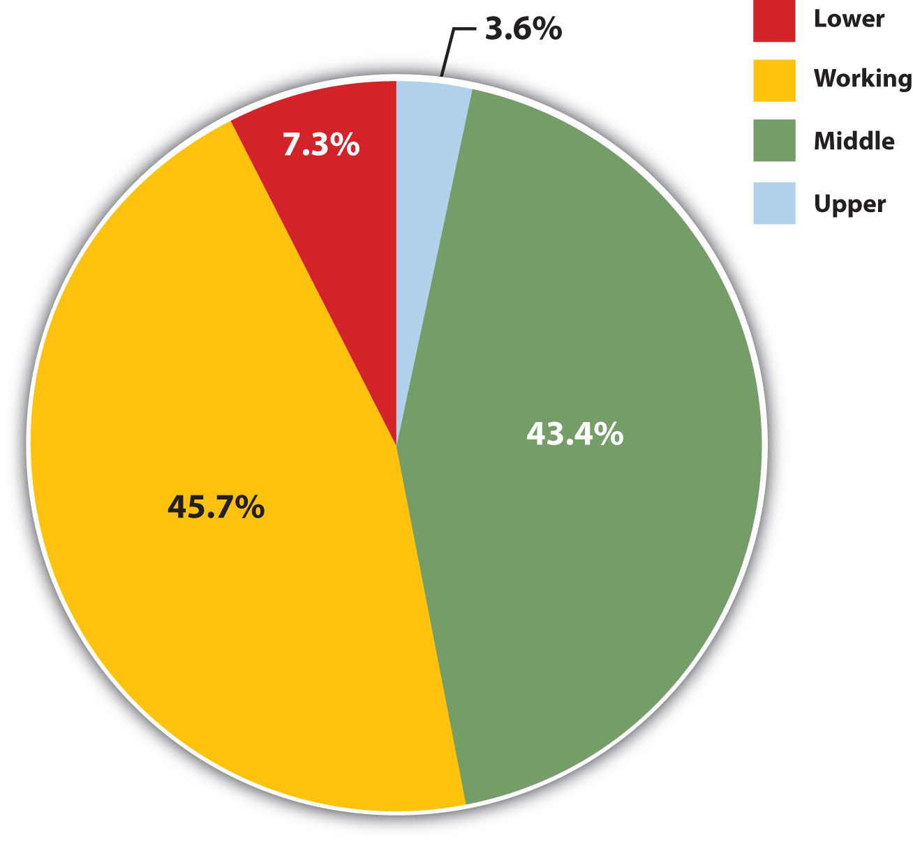
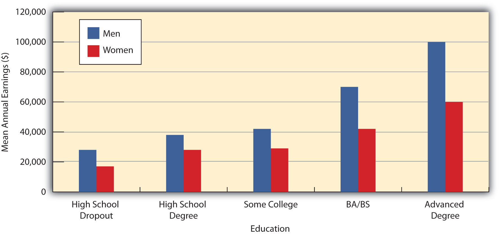
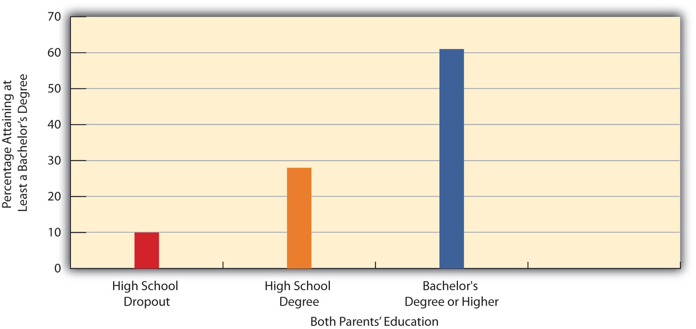

There is a surprising amount of disagreement among sociologists on the number of social classes in the United States and even on how to measure social class membership. We first look at the measurement issue and then discuss the number and types of classes sociologists have delineated.
We can measure social class either objectively or subjectively. If we choose the objective method, we classify people according to one or more criteria, such as their occupation, education, and/or income. The researcher is the one who decides which social class people are in based on where they stand in regard to these variables. If we choose the subjective method, we ask people what class they think they are in. For example, the General Social Survey asks, “If you were asked to use one of four names for your social class, which would you say you belong in: the lower class, the working class, the middle class, or the upper class?” Figure 8.3 "Subjective Social Class Membership" depicts responses to this question. The trouble with such a subjective measure is that some people say they are in a social class that differs from what objective criteria might indicate they are in. This problem leads most sociologists to favor objective measures of social class when they study stratification in American society.
Figure 8.3 Subjective Social Class Membership
Source: Data from General Social Survey, 2008.
Yet even here there is disagreement between functionalist theorists and conflict theorists on which objective measures to use. Functionalist sociologists rely on measures of socioeconomic status (SES)A measure based on occupation, education, and income favored by functionalist sociologists as an indicator of social class position., such as education, income, and occupation, to determine someone’s social class. Sometimes one of these three variables is used by itself to measure social class, and sometimes two or all three of the variables are combined (in ways that need not concern us) to measure social class. When occupation is used, sociologists often rely on standard measures of occupational prestige. Since the late 1940s, national surveys have asked Americans to rate the prestige of dozens of occupations, and their ratings are averaged together to yield prestige scores for the occupations (Hodge, Siegel, & Rossi, 1964).Hodge, R. W., Siegel, P., & Rossi, P. (1964). Occupational prestige in the United States, 1925–63. American Journal of Sociology, 70, 286–302. Over the years these scores have been relatively stable. Here are some average prestige scores for various occupations: physician, 86; college professor, 74; elementary school teacher, 64; letter carrier, 47; garbage collector, 28; and janitor, 22.
Despite SES’s usefulness, conflict sociologists prefer different, though still objective, measures of social class that take into account ownership of the means of production and other dynamics of the workplace. These measures are closer to what Marx meant by the concept of class throughout his work, and they take into account the many types of occupations and workplace structures that he could not have envisioned when he was writing during the 19th century.
For example, corporations have many upper-level managers who do not own the means of production but still determine the activities of workers under them. They thus do not fit neatly into either of Marx’s two major classes, the bourgeoisie or the proletariat. Recognizing these problems, conflict sociologists delineate social class on the basis of several factors, including the ownership of the means of production, the degree of autonomy workers enjoy in their jobs, and whether they supervise other workers or are supervised themselves (Wright, 2000).Wright, E. O. (2000). Class counts: Comparative studies in class analysis. New York, NY: Cambridge University Press.
As should be evident, it is not easy to determine how many social classes exist in the United States. Over the decades, sociologists have outlined as many as six or seven social classes based on such things as, once again, education, occupation, and income, but also on lifestyle, the schools people’s children attend, a family’s reputation in the community, how “old” or “new” people’s wealth is, and so forth (Coleman & Rainwater, 1978; Warner & Lunt, 1941).Coleman, R. P., & Rainwater, L. (1978). Social standing in America. New York, NY: Basic Books; Warner, W. L., & Lunt, P. S. (1941). The social life of a modern community. New Haven, CT: Yale University Press. For the sake of clarity, we will limit ourselves to the four social classes included in Figure 8.3 "Subjective Social Class Membership": the upper class, the middle class, the working class, and the lower class. Although subcategories exist within some of these broad categories, they still capture the most important differences in the American class structure (Gilbert, 2011).Gilbert, D. (2011). The American class structure in an age of growing inequality (8th ed.). Thousand Oaks, CA: Pine Forge Press. The annual income categories listed for each class are admittedly somewhat arbitrary but are based on the percentage of households above or below a specific income level.
Depending on how it is defined, the upper class consists of about 4% of the U.S. population and includes households with annual incomes (2009 data) of more than $200,000 (DeNavas-Walt, Proctor, & Smith, 2010).DeNavas-Walt, C., Proctor, B. D., & Smith, J. C. (2010). Income, poverty, and health insurance coverage in the United States: 2009 (Current Population Report P60-238). Washington, DC: U.S. Census Bureau. Some scholars would raise the ante further by limiting the upper class to households with incomes of at least $500,000 or so, which in turn reduces this class to about 1% of the population, with an average wealth (income, stocks and bonds, and real estate) of several million dollars. However it is defined, the upper class has much wealth, power, and influence (Kerbo, 2009).Kerbo, H. R. (2009). Social stratification and inequality. New York, NY: McGraw-Hill.
Members of the upper-upper class have “old” money that has been in their families for generations; some boast of their ancestors coming over on the Mayflower. They belong to exclusive clubs and live in exclusive neighborhoods; have their names in the Social Register; send their children to expensive private schools; serve on the boards of museums, corporations, and major charities; and exert much influence on the political process and other areas of life from behind the scenes. Members of the lower-upper class have “new” money acquired through hard work, lucky investments, and/or athletic prowess. In many ways their lives are similar to those of their old-money counterparts, but they do not enjoy the prestige that old money brings. Bill Gates, the founder of Microsoft and the richest person in the United States in 2009, would be considered a member of the lower-upper class because his money is too “new.” Because he does not have a long-standing pedigree, upper-upper class members might even be tempted to disparage his immense wealth, at least in private.
Many of us like to think of ourselves in the middle class, as Figure 8.3 "Subjective Social Class Membership" showed, and many of us are. The middle class includes the 46% of all households whose annual incomes range from $50,000 to $199,999. As this very broad range suggests, the middle class includes people with many different levels of education and income and many different types of jobs. It is thus helpful to distinguish the upper-middle class from the lower-middle class on the upper and lower ends of this income bracket, respectively. The upper-middle class has household incomes from about $150,000 to $199,000, amounting to about 4.4% of all households. People in the upper-middle class typically have college and, very often, graduate or professional degrees; live in the suburbs or in fairly expensive urban areas; and are bankers, lawyers, engineers, corporate managers, and financial advisers, among other occupations.
The lower-middle class has household incomes from about $50,000 to $74,999, amounting to about 18% of all families. People in this income bracket typically work in white-collar jobs as nurses, teachers, and the like. Many have college degrees, usually from the less prestigious colleges, but many also have 2-year degrees or only a high school degree. They live somewhat comfortable lives but can hardly afford to go on expensive vacations or buy expensive cars and can send their children to expensive colleges only if they receive significant financial aid.
Working-class households have annual incomes between about $25,000 and $49,999 and constitute about 25% of all U.S. households. They generally work in blue-collar jobs such as factory work, construction, restaurant serving, and less skilled clerical positions. People in the working class typically do not have 4-year college degrees, and some do not have high school degrees. Although most are not living in official poverty, their financial situation is very uncomfortable. A single large medical bill or expensive car repair would be almost impossible to pay without going into considerable debt. Working-class families are far less likely than their wealthier counterparts to own their own homes or to send their children to college. Many of them live at risk for unemployment as their companies downsize by laying off workers even in good times, and hundreds of thousands began to be laid off when the U.S. recession began in 2008.
Although lower class is a common term, many observers prefer a less negative-sounding term like the poor, which is the term used here. The poor have household incomes under $25,000 and constitute about 25% of all U.S. households. Many of the poor lack high school degrees, and many are unemployed or employed only part time in semiskilled or unskilled jobs. When they do work, they work as janitors, house cleaners, migrant laborers, and shoe shiners. They tend to rent apartments rather than own their own homes, lack medical insurance, and have inadequate diets. We will discuss the poor further when we focus later in this chapter on inequality and poverty in the United States.
Regardless of how we measure and define social class, what are our chances of moving up or down within the American class structure? As we saw earlier, the degree of vertical social mobility is a key distinguishing feature of systems of stratification. Class systems such as in the United States are thought to be open, meaning that social mobility is relatively high. It is important, then, to determine how much social mobility exists in the United States.
Here we need to distinguish between two types of vertical social mobility. Intergenerational mobilityVertical mobility from one generation to the next within the same family. refers to mobility from one generation to the next within the same family. If children from poor parents end up in high-paying jobs, the children have experienced upward intergenerational mobility. Conversely, if children of college professors end up hauling trash for a living, these children have experienced downward intergenerational mobility. Intragenerational mobilityVertical mobility within a person’s own lifetime. refers to mobility within a person’s own lifetime. If you start out as an administrative assistant in a large corporation and end up as an upper-level manager, you have experienced upward intragenerational mobility. But if you start out from business school as an upper-level manager and get laid off 10 years later because of corporate downsizing, you have experienced downward intragenerational mobility.
Sociologists have conducted a good deal of research on vertical mobility, much of it involving the movement of males up or down the occupational prestige ladder compared to their fathers, with the earliest studies beginning in the 1960s (Blau & Duncan, 1967; Featherman & Hauser, 1978).Blau, P. M., & Duncan, O. D. (1967). The American occupational structure. New York, NY: Wiley; Featherman, D. L., & Hauser, R. M. (1978). Opportunity and change. New York, NY: Academic Press. For better or worse, the focus on males occurred because the initial research occurred when many women were still homemakers and also because women back then were excluded from many studies in the social and biological sciences. The early research on males found that about half of sons end up in higher-prestige jobs than their fathers had but that the difference between the sons’ jobs and their fathers’ was relatively small. For example, a child of a janitor may end up running a hardware store but is very unlikely to end up as a corporate executive. To reach that lofty position, it helps greatly to have parents in jobs much more prestigious than a janitor’s. Contemporary research also finds much less mobility among African Americans and Latinos than among non-Latino whites with the same education and family backgrounds, suggesting an important negative impact of racial and ethnic discrimination (see Chapter 7 "Deviance, Crime, and Social Control").
A key vehicle for upward mobility is formal education. Regardless of the socioeconomic status of our parents, we are much more likely to end up in a high-paying job if we attain a college degree or, increasingly, a graduate or professional degree. Figure 8.4 "Education and Median Earnings of Year-Round, Full-Time Workers, 2007" vividly shows the difference that education makes for Americans’ median annual incomes. Notice, however, that for a given level of education, men’s incomes are greater than women’s. Figure 8.4 "Education and Median Earnings of Year-Round, Full-Time Workers, 2007" thus suggests that the payoff of education is higher for men than for women, and many studies support this conclusion (Green & Ferber, 2008).Green, C. A., & Ferber, M. A. (2008). The long-term impact of labor market interruptions: How crucial is timing? Review of Social Economy, 66, 351–379. The reasons for this gender difference are complex and will be discussed further in Chapter 11 "Gender and Gender Inequality". To the extent vertical social mobility exists in the United States, then, it is higher for men than for women and higher for whites than for people of color.
Figure 8.4 Education and Median Earnings of Year-Round, Full-Time Workers, 2007
Source: Data from U.S. Census Bureau. (2010). Statistical abstract of the United States: 2010. Washington, DC: U.S. Government Printing Office. Retrieved from http://www.census.gov/compendia/statab.
Certainly the United States has upward social mobility, even when we take into account gender and racial discrimination. Whether we conclude the United States has a lot of vertical mobility or just a little is the key question, and the answer to this question depends on how the data are interpreted. People can and do move up the socioeconomic ladder, but their movement is fairly limited. Hardly anyone starts at the bottom of the ladder and ends up at the top. As we see later in this chapter, recent trends in the U.S. economy have made it more difficult to move up the ladder and have even worsened the status of some people.
One way of understanding the issue of U.S. mobility is to see how much parents’ education affects the education their children attain. Figure 8.5 "Parents’ Education and Percentage of Respondents Who Have a College Degree" compares how General Social Survey respondents with parents of different educational backgrounds fare in attaining a college (bachelor’s) degree. For the sake of clarity, the figure includes only those respondents whose parents had the same level of education as each other: they either both dropped out of high school, both were high school graduates, or both were college graduates.
Figure 8.5 Parents’ Education and Percentage of Respondents Who Have a College Degree
Source: Data from General Social Survey, 2008.
As Figure 8.5 "Parents’ Education and Percentage of Respondents Who Have a College Degree" indicates, we are much more likely to get a college degree if our parents had college degrees themselves. The two bars for respondents whose parents were high school graduates or dropouts, respectively, do represent upward mobility, because the respondents are graduating from college even though their parents did not. But the three bars taken together also show that our chances of going to college depend heavily on our parents’ education (and presumably their income and other aspects of our family backgrounds). The American Dream does exist, but it is much more likely to remain only a dream unless we come from advantaged backgrounds. In fact, there is less vertical mobility in the United States than in other Western democracies. As a recent analysis summarized the evidence, “There is considerably more mobility in most of the other developed economies of Europe and Scandinavia than in the United States” (Mishel, Bernstein, & Shierholz, 2009, p. 108).Mishel, L., Bernstein, J., & Shierholz, H. (2009). The state of working America 2008/2009. Ithaca, NY: ILR Press [An imprint of Cornell University Press].